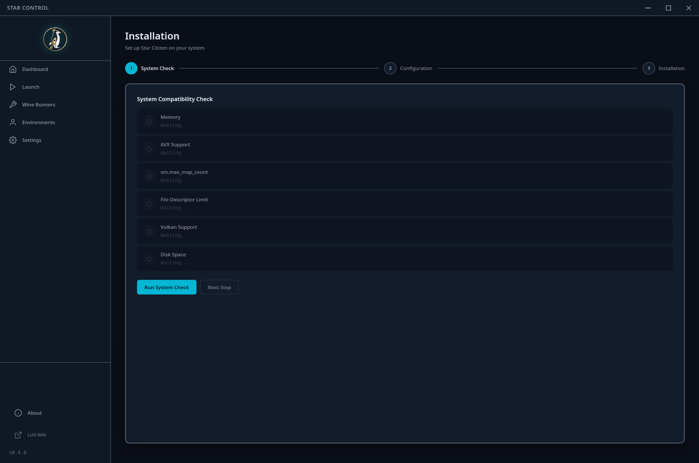

Installation
A three-step wizard that sets up Star Citizen on Linux from scratch.
The Installation page is a step-by-step wizard that handles everything needed to get Star Citizen running on Linux. A progress indicator at the top shows which step you're on, and you can navigate back to previous steps at any time.
Step 1: System Compatibility Check
Before installing, Star Control verifies that your system meets the requirements:

- Memory (RAM) - Star Citizen requires significant memory. 16 GB is the minimum, 32 GB or more is recommended.
- AVX Support - The game requires a CPU with AVX instruction set support.
- Inotify Mapcount - The kernel parameter
vm.max_map_countmust be set high enough (typically 16777216). - File Descriptor Limit - The open file descriptor limit (
ulimit -n) must be sufficient. - Vulkan Support - A Vulkan-capable GPU with proper drivers is required.
- Disk Space - Sufficient free disk space for the installation (Star Citizen requires 100+ GB).
Click Run Check to execute all tests. Results are preserved if you navigate away and come back.
If any check fails, address the issue before proceeding. The system check cannot fix kernel parameters or install drivers for you - it only reports the current state.
Step 2: Configuration
Configure where and how Star Citizen will be installed:
- Install Directory - Use the browse button to select the base directory. The Wine prefix and game files will be created inside this directory.
- Wine Runner - Select and download a Wine/Proton runner. Multiple community sources are available (see Wine Runners for details).
- Performance Options - Pre-configure launch options like ESync, FSync, and DXVK Async (these can be changed later on the Launch page).
Step 3: Automated Installation
The installation runs through seven sequential phases:

- Prepare - Creates the directory structure and initializes the Wine prefix.
- Winetricks - Installs required Windows dependencies (fonts, libraries).
- DXVK - Installs the DirectX-to-Vulkan translation layer for GPU compatibility.
- Registry - Applies Windows registry settings required by the RSI Launcher.
- Download - Downloads the RSI Launcher installer.
- Install - Runs the RSI Launcher installer inside the Wine prefix.
- Launch - Performs an initial launch to complete the setup and verify everything works.
A real-time log panel shows detailed output from each phase. If an error occurs, the log will contain diagnostic information.
After the installation wizard completes, you still need to log into the RSI Launcher and download the actual game files. Star Control handles the Linux-specific setup; the game download happens through the official RSI Launcher.